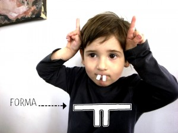

Noah als Häschen. Nur mit einem Stück Papier.

Das könnte dir auch gefallen


Material
Trommel 01
Diese Trommel ist aus einer Dose. Der Faden ist ein Gummiband. Wenn man die Perle nach oben zieht und dann wieder los lässt macht sie ein…
Weiterlesen →

Spielzeug
Spiel
Badewannen Spiel Wir haben Silhouetten (z.B. Tiere) aus Mossgummi ausgeschnitten und danach noch ein paar kleinere Formen, wie Kreise,....Wenn das Moosgummis ein bisschen feucht ist klebt…
Weiterlesen →
Aktivität
Surfbrett
Surfbrett: Die Playmobil- Figuren von Hannah und Noah haben neue Surfbretter bekommen. Sie bestehen aus Sepia- Schalen, die wir am Strand gefunden haben.
Weiterlesen →
Spielzeug
Schweinchen oder Katze
span style="color: #c27ba0; font-family: Georgia, 'Times New Roman', serif;">Schweinchen oder Katze: Nur mit einem Eierkarton kannst Du alle möglichen Tierverkleidungen machen. Hannah tauscht ihre Schweinchennase gegen…
Weiterlesen →